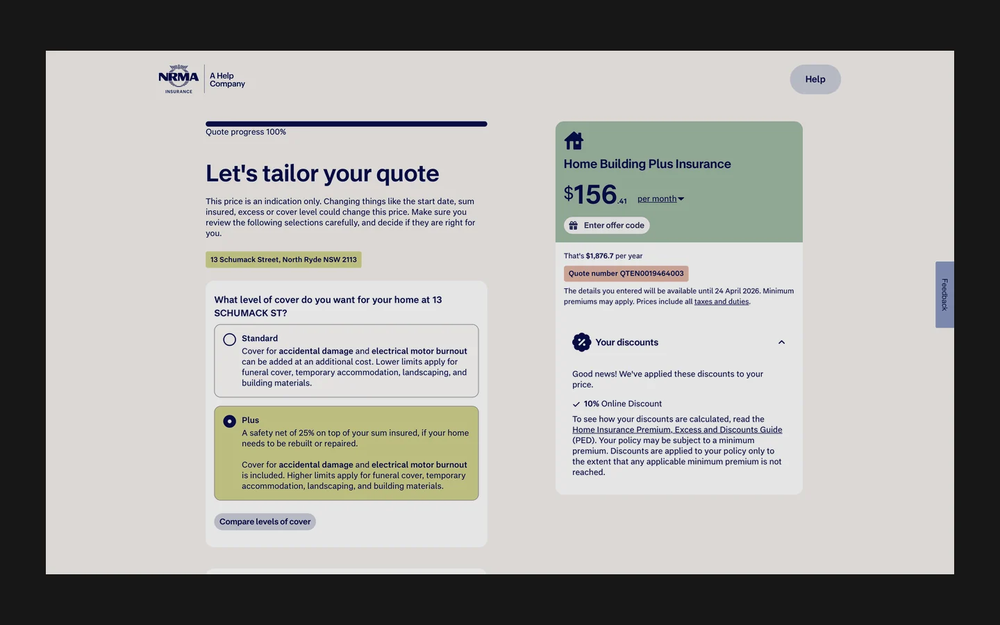
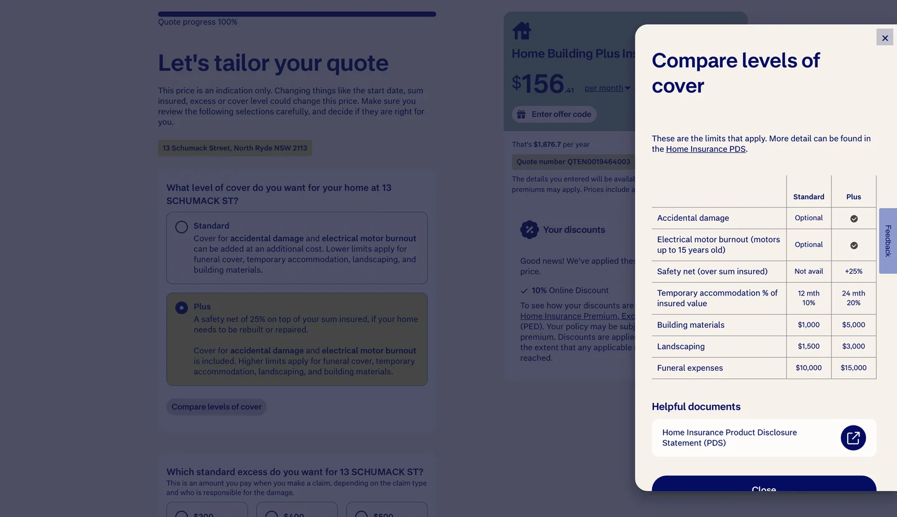

NRMA Quote Flow Redesign
I led the redesign of NRMA’s home insurance quote flow and used A/B testing to explore how clearer pricing and cover comparisons could help customers choose.

The context
In NRMA’s home insurance quote journey, customers had to interpret dense cover options and pricing with limited context. The challenge was to help them understand the trade-offs without relying on upgrade prompts.
What I noticed
I used Tealeaf to pinpoint where customers hesitated, reread information or dropped out. That gave us specific points to investigate in the information hierarchy, pricing context and descriptions of cover.
What I changed
I led the design from discovery through delivery with product, engineering and analytics. I framed hypotheses, and we used structured A/B experiments to test changes and iterate. I reorganised information to make value easier to compare and contributed reusable design system patterns for adjacent journeys.


How the pricing experiment was measured
The time-to-quote and cover-selection figures come from the wider NRMA Home Insurance Quote & Buy redesign. The pricing-page optimisation was measured separately. The available project record gives its uplift figure without naming the metric.
- less time to quote
- ~50%
- increase in higher-value cover selection
- ~75%
- uplift reported from pricing-page optimisation
- 12%